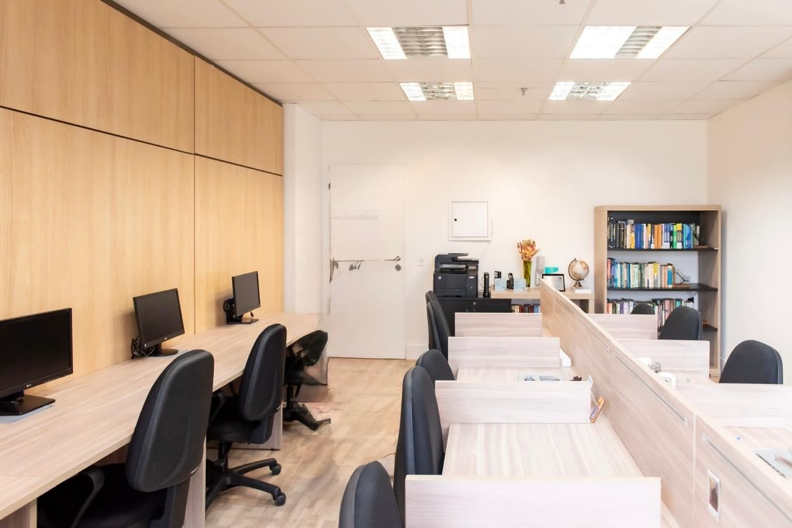
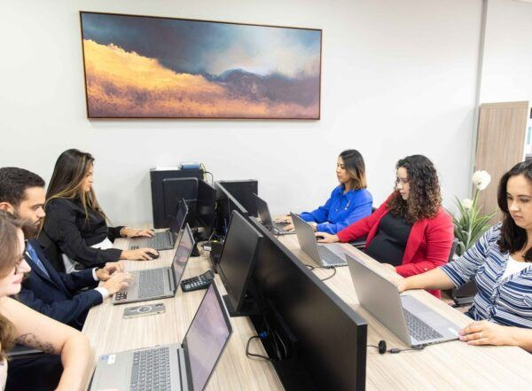
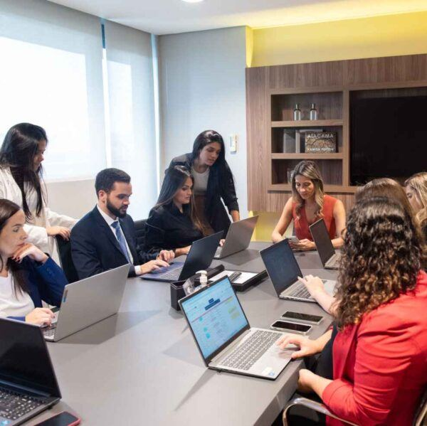
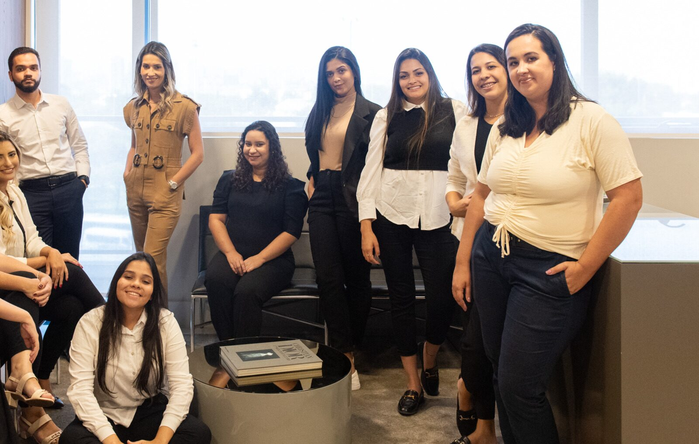
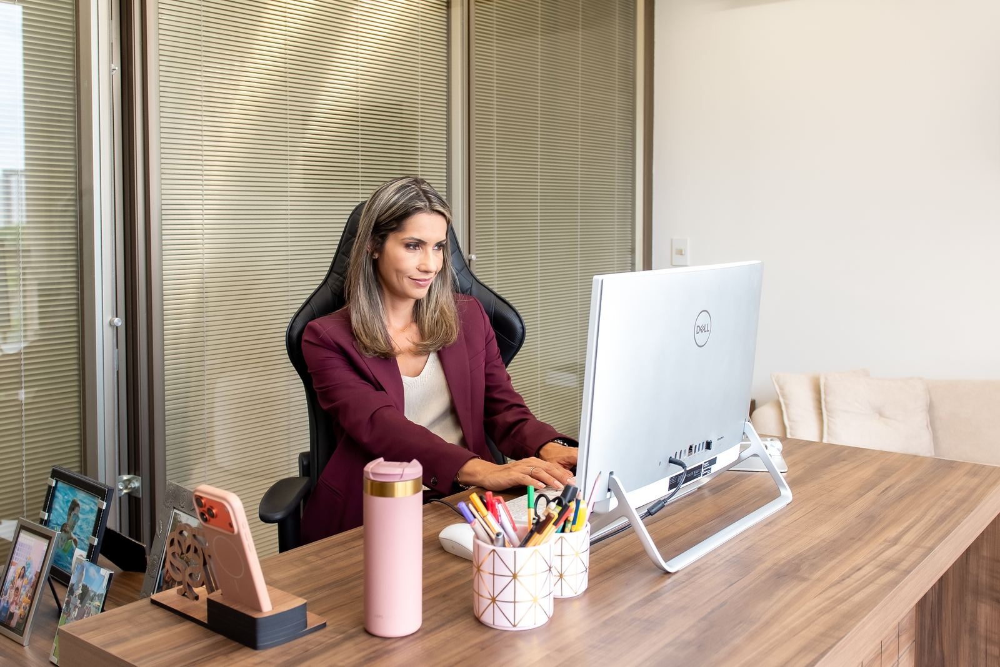

Falaw Advogados · São Paulo, BrasilAtuações
O Falaw Advogados se destaca por oferecer uma combinação única de especialização setorial, abordagem preventiva, serviços personalizados e comprometimento com a inovação. Nossa missão é ser um parceiro estratégico para nossos clientes, contribuindo para seu sucesso e crescimento sustentável.
Solicitar contato →
Consultoria Trabalhista
Preventiva
- Colaboramos diretamente com os departamentos de Recursos Humanos e Jurídico de nossos clientes para evitar passivos trabalhistas e promover um ambiente de trabalho saudável em todas as fases contratuais.
- Atuamos em projetos específicos, como kits admissionais, contratos, políticas internas personalizadas, bem como suporte de compliance e sindicâncias.
- Consultoria permanente: Suporte jurídico constante nas mais diversas questões do cotidiano empresarial e adequação às constantes mudanças na legislação, garantindo conformidade e segurança jurídica.
- Oferecemos assessoria estratégica para empresas de tecnologia, plataformas digitais e startups, promovendo o crescimento sustentável, dentro da visão de negócio.

Gestão de Contencioso
Trabalhista
- Representamos empresas em demandas judiciais trabalhistas, atuando de forma proativa na defesa dos interesses corporativos. Nossa equipe possui expertise em litígios complexos, buscando soluções eficientes que minimizem riscos e protejam a imagem de nossas clientes, nas esferas contenciosa e administrativa em qualquer instância ou tribunal do país, incluindo o Ministério Público do Trabalho (MPT) e o Ministério do Trabalho e Emprego (MTE).
- Buscamos reduzir o passivo trabalhista por meio da celebração de acordos, contando com uma equipe especializada.

Equipe de Legal Operations
Dedicada
- Para oferecer soluções jurídicas ainda mais eficientes e alinhadas às necessidades dos nossos clientes, contamos com uma equipe dedicada de Legal Operations (Legal Ops), responsável por otimizar processos internos, implementar tecnologias inovadoras e aprimorar a gestão de processos, utilizando ferramentas analíticas para monitorar métricas de desempenho, identificar tendências e fornecer insights estratégicos para diminuição de passivo e de custos da empresa.
- Nossa equipe de Legal Ops trabalha em sintonia com os advogados e demais profissionais do escritório, focando na entrega de serviços jurídicos de alta qualidade de maneira mais ágil e eficaz. Assim, nossos clientes podem contar com um parceiro estratégico comprometido com a inovação e a excelência operacional.
Relações
Sindicais
- Assessoramos em negociações coletivas em todo o território nacional, defendendo os interesses de nossos clientes. Mantemos relacionamentos saudáveis e duradouros com sindicatos, atuando diretamente para a proteção dos direitos e interesses empresariais.

Palestras, Cursos
e Workshops
- Oferecemos palestras e treinamentos, inclusive em inglês, apresentando soluções que agregam valor ao cliente e influenciam diretamente a cultura empresarial. Nosso foco é a diminuição de riscos de passivos trabalhistas, com mapeamento prévio realizado pela equipe por meio de contato direto e constante. Nossos profissionais estão comprometidos em fornecer conhecimento atualizado e relevante.
Nossos
Diferenciais!
Especialização no Setor de Tecnologia e Startups
Temos vasta experiência com empresas de tecnologia, plataformas digitais e startups, compreendendo profundamente as particularidades e desafios desse mercado inovador e dinâmico.
Atuação Preventiva e Colaborativa
Trabalhamos diretamente com os departamentos de Recursos Humanos e Jurídico dos clientes para desenvolver políticas e práticas que promovem um ambiente de trabalho saudável e evitam passivos trabalhistas futuros.
Equipe Dedicada de Legal Operations
Contamos com uma equipe especializada em Legal Ops, responsável por otimizar processos internos, implementar tecnologias inovadoras e aprimorar a gestão de projetos jurídicos, garantindo agilidade e eficiência nos serviços prestados.
Não somos apenas um escritório de advocacia, somos parceiros de negócios
Sabemos que a área trabalhista é um enorme desafio para o crescimento das empresas no Brasil e, por isso, somos um escritório que agrega ao cliente, trazendo ideias inovadoras e opções para a tomada de decisões, dentro da visão de negócios e reduzindo custos e riscos de passivo.
Suporte Jurídico Constante e Multidisciplinar
Disponibilizamos assistência jurídica contínua nas mais variadas matérias do Direito Trabalhista que envolvem o cotidiano das empresas, garantindo respostas ágeis e assertivas.